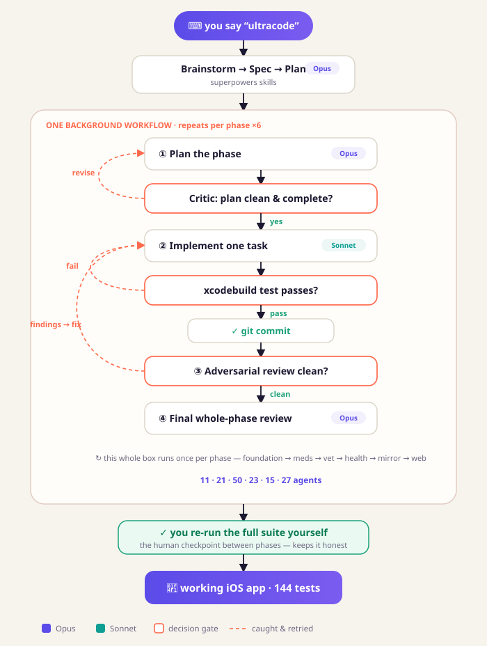

Reference · case study
Anatomy of an Autonomous Multi-Agent iOS Build
How a native iOS app v1 got built mostly hands-off — what made it possible, and where it broke.
What got built
A pivot from a half-finished web product to a native iOS health-tracking app, taken to a working v1 on a real iPhone:
- Offline-first health record (pet profile, medications + dose logs, vaccinations, vet visits + recommendations, weight/health markers, symptom episodes/entries) on Core Data + CloudKit
- Local notification reminders, an opt-in desktop mirror (Convex token-auth + a Next.js read-only dashboard), and a stateless Claude extraction endpoint
- A full bold visual redesign (design system, gradient heroes, 5 clean tabs)
- ~104 Swift files, 144 passing tests, ~80 commits
The numbers
Workflow tool invocations | 8 (7 ran; 1 failed instantly on a script bug) |
| Sub-agents spawned | 183 |
| Sub-agent tokens | ~10.7M |
| Tests at v1 | 144, green |
| Human role | spec decisions + a re-run-the-tests checkpoint between phases |
The flow

The recipe (what actually enabled the autonomy)
It was setup, not magic. Seven things stacked up:
- A background orchestration primitive — the
Workflowtool runs a deterministic script detached, spawns fresh subagents, takes schema-validated output so the script can branch, and re-invokes the main loop on completion. That’s why an hour of work could happen “by itself.” - A real test signal —
xcodebuild test(144 tests),xcodegen,tsc,git. Every task wrote a failing test, implemented, and re-ran it. Ground truth, not vibes. This is the difference between working code and confident garbage. - A headless toolchain that was already installed — Xcode, simulators, git, the Convex CLI, and crucially
xcodegen(generate the.xcodeprojfromproject.ymlwith no GUI). Without it, an agent literally cannot create an Xcode project. - Self-correction in the structure — per-task adversarial review + fix-loops, plus an Opus whole-phase review. Other agents caught what implementers missed (e.g. a fully-tested screen never wired into navigation).
- Planning scaffolding — brainstorm → spec → a bite-sized TDD plan with exact code. Implementers transcribed-and-verified rather than free-solving.
- Permissive execution — tool calls ran without per-call approval. On a default “ask every time” mode, autonomy stalls constantly.
- Durable state — per-task git commits as a recovery ledger; specs/plans on disk; resumable workflows. An hour of work survived context limits.
The per-phase loop
brainstorm → spec → writing-plans (Phase 1 only)
then per phase, as ONE background Workflow:
Plan (Opus) → bite-sized TDD plan to disk
Critic (Opus) → gate the plan; revise until clean
Implement → per task, sequentially: failing test → code → run test → commit
Review → adversarial per-task review + fix loop
Final (Opus) → whole-phase diff review
between phases → re-run the full suite independently before continuingWhere it broke (the honest part)
“Autonomous” still needed babysitting at the seams:
- A wasted phase.
argsdidn’t thread throughWorkflow({scriptPath}), so a run fell back to its default and re-built Phase 2 instead of Phase 3 — ~36 agents, ~2M tokens, no new work. Fix: hardcode phase params in the script, don’t passargs. - A flaky scare. One test-host launch reported
TEST FAILEDwith zero real failures (a CloudKit-init hiccup in the simulator). Re-running showed 144/144. Lesson: never trust a single run. - Wrong signing Team ID. The certificate’s parenthesized ID was mistaken for the team ID, so
xcodegenreverted it every regeneration and the human re-fixed it by hand each time. - A build-breaking artifact. Tooling
.omc/state dirs landed in the source tree andxcodegenglobbed them as duplicate resources → “Multiple commands produce.” - Editor false alarms. Constant SourceKit “Cannot find type X” diagnostics — all noise; the real
xcodebuildresult was green.
The one-line takeaway
Autonomy = background orchestration + a true test signal + adversarial review + a headless toolchain + permissive execution, with a human checkpoint at phase boundaries. Remove the test signal or the headless toolchain and it falls apart fast.